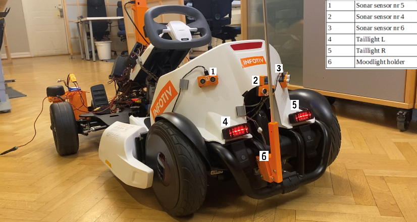
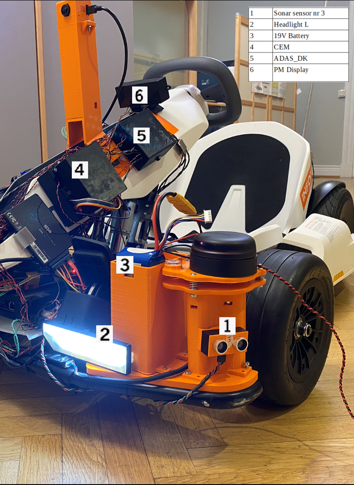

Body Electronics
The intended use case of the delivered package is to add a car body electronics to the Infotiv Autonomous Platform including lights, sensors, horn and monitor displaying the platform power mode and a simulated key.
As the aim for the platform is the possibility to model real life situations with full size cars as closely as possible, the autonomous Go-kart platform need hardware that mimics a real car. That includes Body Electronics: headlights, taillights, turn indicators and horn. They will be of use as visualization tools in the development of driving assistance and autonomous functions that ultimately aims at making traffic safer.
Power Mode is the functional state of the car, ordinarily controlled by the car key. Depending on the Power Mode, CEM (Central Electronic Module) controls the following functionalities
- Headlights / Taillights
- Blinkers
- Horn
- Moodlight
 
Delivered functinalities:
- Headlights connected to the CEM (Central Electronic Module) with two intensity settings
- Taillights connected to the CEM, with two intensity settings
- Turn indicators connected to the CEM, individually controllable (R/L/Emergency)
- Sonar sensors mounted on the go-kart (three in front, three in the back), connected to the safety CAN bus, sending distance values.
- Horn connected to the CEM, low and high volume.
- CAN signal interface to each function, fully abstracted from actual hardware implementation
- Power moding implementation, where headlights turn on low intensity when power mode is ‘Armed’. Modes: sleep, locked, unlocked, key out, key in, accessory, on, running.
- (Radar sensors connected to the ADAS, check alternatives to the Acconeer sensors)
- ‘Mood light’ RGB LED status indicator to tell the user what the car is ‘thinking’, visible from the other side of a gokart track.
To learn more about the requirements please check protectedDocuments/2020 - Infotiv Autonomous Platform, Body Electronics Intern work Package folder (Protected document)